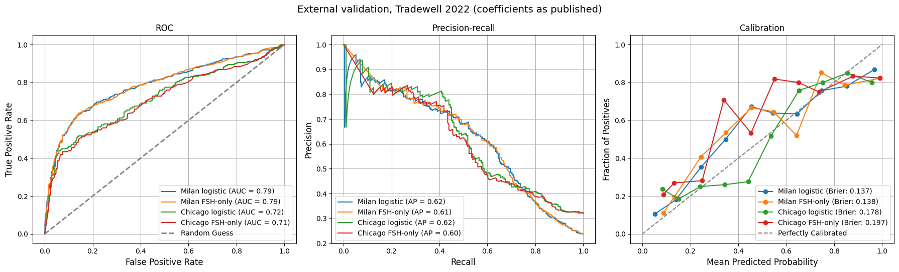

seminal quickstart
seminal implements the two azoospermia prediction models of Tradewell et al.
(World J Mens Health 2022;40:600-607, doi:10.5534/wjmh.210138) with the
coefficients exactly as printed.
Both models estimate the probability that a man presenting for infertility evaluation has no sperm in the ejaculate, without a semen analysis.
FSH-only: a quadratic in serum FSH (Fig. 1 of the paper)
Logistic regression: age, FSH, LH, total testosterone and mean testis volume (Table 3 of the paper)
It also carries the WHO 2021 semen reference distributions (Campbell et al., Andrology 2021), the fertile-man centiles behind the 6th-edition laboratory manual.
This notebook runs both azoospermia models on one patient, then on the authors’ own validation cohorts to show the implementation reproduces the published results, and ends with the semen reference functions.
# pip install seminal (or `make install` from the repo root for the editable version)
import seminal
from seminal import azoospermia_fsh, azoospermia_lr, add_azoospermia_risk_cols
print(seminal.__version__)
0.0.1a1
One patient
The median man from the paper’s Table 1: age 36, FSH 5.7 IU/L, LH 4.5 IU/L, total testosterone 429 ng/dL, mean testis volume 15 mL.
The FSH-only model needs just the FSH. The logistic model needs all five inputs. Both return a probability between 0 and 1.
patient = dict(age=36, fsh=5.7, lh=4.5, testosterone=429, testis_volume=15)
p_fsh = azoospermia_fsh(patient["fsh"]) # FSH-only quadratic
p_lr = azoospermia_lr(**patient) # full logistic model
print(f"FSH-only model: {p_fsh:.1%}")
print(f"Logistic model: {p_lr:.1%}")
# Push FSH up and watch both models respond
for fsh in [2, 5.7, 10, 15, 20, 30]:
print(
f"FSH {fsh:>5} -> FSH-only {azoospermia_fsh(fsh):>6.1%} "
f"logistic {azoospermia_lr(**{**patient, 'fsh': fsh}):>6.1%}"
)
FSH-only model: 8.9%
Logistic model: 8.6%
FSH 2 -> FSH-only 8.7% logistic 5.5%
FSH 5.7 -> FSH-only 8.9% logistic 8.6%
FSH 10 -> FSH-only 13.8% logistic 14.1%
FSH 15 -> FSH-only 25.6% logistic 24.0%
FSH 20 -> FSH-only 44.0% logistic 37.7%
FSH 30 -> FSH-only 100.0% logistic 68.9%
The FSH curve
The paper describes a U-shaped relationship: risk is 10.1% at undetectable FSH, lowest (about 8%) near 3.6 IU/L, and effectively certain above 30 IU/L. Plot the FSH-only model across the clinical range and mark those three anchors. Overlay the logistic model with the other inputs held at the median patient.
import numpy as np
import matplotlib.pyplot as plt
fsh = np.linspace(0, 40, 401)
p_quad = azoospermia_fsh(fsh) # vectorized
p_logit = [azoospermia_lr(**{**patient, "fsh": f}) for f in fsh]
fig, ax = plt.subplots(figsize=(7, 4))
ax.plot(fsh, p_quad, label="FSH-only quadratic (Fig. 1)")
ax.plot(fsh, p_logit, label="Logistic model, other inputs at median", linestyle="--")
# The paper's three anchors
anchors = [
(0, "10.1% at FSH 0", 8, 10),
(3.6, "nadir at 3.6", 8, -16),
(30, "100% at ~30", 8, -14),
]
ax.scatter(
[a[0] for a in anchors],
[azoospermia_fsh(a[0]) for a in anchors],
zorder=3,
color="black",
)
for x, txt, dx, dy in anchors:
ax.annotate(
txt, (x, azoospermia_fsh(x)), xytext=(dx, dy), textcoords="offset points"
)
ax.set_xlabel("Serum FSH (IU/L)")
ax.set_ylabel("Probability of azoospermia")
ax.set_ylim(0, 1.02)
ax.legend()
plt.show()

Scoring a cohort
The study data are public (CC0) on Harvard Dataverse. make data_gen preprocess
downloads them and builds data/processed/tradewell_2022.parquet: one row per
semen analysis with the five model inputs, the azoospermia outcome, the site,
and an included flag reproducing the paper’s cohort (Miami 946, Milan 1,955,
Chicago 596).
Score every row with both models and compare discrimination per site to what the paper reported: Milan AUC 0.79 / 0.78 and Chicago 0.72 / 0.71 (logistic / FSH-only). Miami is the development cohort, so its AUC is in-sample.
import pandas as pd
from model_metrics import summarize_model_performance
df = pd.read_parquet("../data/processed/tradewell_2022.parquet")
scored = add_azoospermia_risk_cols(df[df["included"]])
# Per site, both models side by side
for site in ["miami", "milan", "chicago"]:
g = scored[scored["site"] == site]
print(f"\n{site} (n={len(g)}, azoospermic={int(g['azoospermia'].sum())})")
summarize_model_performance(
y_prob=[g["azoo_lr"], g["azoo_fsh"]],
y=g["azoospermia"],
model_title=["Logistic (Table 3)", "FSH-only (Fig. 1)"],
)
miami (n=946, azoospermic=131)
Grouped Model Performance Metrics:
Metrics Logistic (Table 3) FSH-only (Fig. 1)
Precision/PPV 0.717 0.723
Average Precision 0.528 0.497
Sensitivity/Recall 0.328 0.260
Specificity 0.979 0.984
F1-Score 0.450 0.382
AUC ROC 0.779 0.763
Brier Score 0.090 0.094
Model Threshold 0.500 0.500
milan (n=1955, azoospermic=465)
Grouped Model Performance Metrics:
Metrics Logistic (Table 3) FSH-only (Fig. 1)
Precision/PPV 0.744 0.760
Average Precision 0.621 0.613
Sensitivity/Recall 0.363 0.333
Specificity 0.961 0.967
F1-Score 0.488 0.463
AUC ROC 0.786 0.786
Brier Score 0.137 0.138
Model Threshold 0.500 0.500
chicago (n=596, azoospermic=191)
Grouped Model Performance Metrics:
Metrics Logistic (Table 3) FSH-only (Fig. 1)
Precision/PPV 0.729 0.815
Average Precision 0.623 0.597
Sensitivity/Recall 0.450 0.277
Specificity 0.921 0.970
F1-Score 0.557 0.414
AUC ROC 0.718 0.707
Brier Score 0.178 0.197
Model Threshold 0.500 0.500
/opt/hostedtoolcache/Python/3.12.16/x64/lib/python3.12/site-packages/tqdm/auto.py:21: TqdmWarning: IProgress not found. Please update jupyter and ipywidgets. See https://ipywidgets.readthedocs.io/en/stable/user_install.html
from .autonotebook import tqdm as notebook_tqdm
ROC, precision-recall and calibration on the two external sites in one figure. AUCs match the paper. The calibration panel is what the paper did not show: the published coefficients applied as-is to another clinic, without refitting.
from model_metrics import (
show_roc_curve,
show_pr_curve,
show_calibration_curve,
combine_plots,
)
milan = scored[scored["site"] == "milan"]
chicago = scored[scored["site"] == "chicago"]
# Shared inputs for every panel: four curves, two sites x two models
curves = dict(
y_prob=[
milan["azoo_lr"],
milan["azoo_fsh"],
chicago["azoo_lr"],
chicago["azoo_fsh"],
],
y=[milan["azoospermia"]] * 2 + [chicago["azoospermia"]] * 2,
model_title=[
"Milan logistic",
"Milan FSH-only",
"Chicago logistic",
"Chicago FSH-only",
],
overlay=True,
)
combine_plots(
[
(show_roc_curve, {**curves, "title": "ROC"}),
(show_pr_curve, {**curves, "title": "Precision-recall"}),
(show_calibration_curve, {**curves, "title": "Calibration"}),
],
n_cols=3,
figsize=(18, 5.5),
suptitle="External validation, Tradewell 2022 (coefficients as published)",
image_filename="../assets/external_validation.svg",
)
AUC for Milan logistic: 0.79
AUC for Milan FSH-only: 0.79
AUC for Chicago logistic: 0.72
AUC for Chicago FSH-only: 0.71
Average Precision for Milan logistic: 0.62
Average Precision for Milan FSH-only: 0.61
Average Precision for Chicago logistic: 0.62
Average Precision for Chicago FSH-only: 0.60

Explaining a prediction
azoospermia_lr(..., explain=True) returns the linear predictor and each
input’s contribution to the log-odds, largest first. Contributions are raw
coefficient × value, so they carry each variable’s scale (testosterone in
ng/dL is a small coefficient on a large number).
high_risk = dict(age=40, fsh=18, lh=9, testosterone=280, testis_volume=9)
out = azoospermia_lr(**high_risk, explain=True)
print(
f"risk = {out['risk']:.1%} "
f"(log-odds {out['linear_predictor']:.2f}, intercept {out['intercept']})"
)
for k, v in out["contributions"].items():
print(f" {k:<14} {v:+.2f}")
# Same man with FSH back in the normal range: how much of the risk was FSH?
normal_fsh = azoospermia_lr(**{**high_risk, "fsh": 5})
print(f"\nwith FSH 5 instead of 18: {normal_fsh:.1%}")
risk = 55.7% (log-odds 0.23, intercept -1.9)
fsh +2.34
age +0.80
testis_volume -0.72
testosterone -0.56
lh +0.27
with FSH 5 instead of 18: 18.8%
WHO 2021 semen reference
semen_percentile places a result among fertile men (interpolated between
the nine published centiles, clipped to 2.5 to 97.5); lower_reference_limit
is the WHO 5th centile. Units are mL, 10^6/mL, 10^6 per ejaculate and
percentages on a 0 to 100 scale; morphology is strict criteria.
from seminal import (
semen_percentile,
lower_reference_limit,
below_reference,
semen_reference,
add_semen_percentile_cols,
)
print("concentration 36 x10^6/mL:", semen_percentile("concentration", 36), "th centile")
print("lower reference limit: ", lower_reference_limit("concentration"))
print("below limit at 12: ", below_reference("concentration", 12))
semen_reference()[["label", "n", "p5", "p50", "p95"]]
concentration 36 x10^6/mL: 25.0 th centile
lower reference limit: 16.0
below limit at 12: True
| label | n | p5 | p50 | p95 | |
|---|---|---|---|---|---|
| parameter | |||||
| volume | Semen volume (mL) | 3586 | 1.4 | 3.0 | 6.2 |
| concentration | Sperm concentration (10^6/mL) | 3587 | 16.0 | 66.0 | 208.0 |
| total_number | Total sperm number (10^6/ejaculate) | 3584 | 39.0 | 210.0 | 701.0 |
| total_motility | Total motility, PR + NP (%) | 3488 | 42.0 | 64.0 | 90.0 |
| progressive_motility | Progressive motility, PR (%) | 3389 | 30.0 | 55.0 | 77.0 |
| nonprogressive_motility | Non-progressive motility, NP (%) | 3387 | 1.0 | 8.0 | 32.0 |
| immotile | Immotile spermatozoa, IM (%) | 2800 | 20.0 | 37.0 | 58.0 |
| vitality | Vitality, live spermatozoa (%) | 1337 | 54.0 | 78.0 | 97.0 |
| normal_forms | Normal forms (%) | 3335 | 4.0 | 14.0 | 39.0 |
For a cohort, add_semen_percentile_cols maps parameter names to your
column names and adds a _pct percentile and a _below_lrl flag per
parameter. Compute total sperm number as volume times concentration if it is
not recorded. The added columns are highlighted.
analyses = pd.DataFrame(
{
"vol_ml": [3.2, 1.1, 2.5],
"conc": [45, 8, 120],
"pr": [40, 20, 65],
"morph": [5, 2, 9],
}
)
analyses["tsc"] = analyses["vol_ml"] * analyses["conc"]
scored = add_semen_percentile_cols(
analyses,
columns={
"volume": "vol_ml",
"concentration": "conc",
"total_number": "tsc",
"progressive_motility": "pr",
"normal_forms": "morph",
},
)
added = [c for c in scored.columns if c not in analyses.columns] # the new columns
scored.style.set_properties(subset=added, **{"background-color": "#e8f1fb"}).format(precision=1)
| vol_ml | conc | pr | morph | tsc | vol_ml_pct | vol_ml_below_lrl | conc_pct | conc_below_lrl | tsc_pct | tsc_below_lrl | pr_pct | pr_below_lrl | morph_pct | morph_below_lrl | |
|---|---|---|---|---|---|---|---|---|---|---|---|---|---|---|---|
| 0 | 3.2 | 45 | 40 | 5 | 144.0 | 54.2 | False | 32.5 | False | 33.8 | False | 16.7 | False | 10.0 | False |
| 1 | 1.1 | 8 | 20 | 2 | 8.8 | 3.1 | True | 2.5 | True | 2.5 | True | 2.5 | True | 2.5 | True |
| 2 | 2.5 | 120 | 65 | 9 | 300.0 | 32.1 | False | 77.7 | False | 64.7 | False | 78.8 | False | 29.2 | False |
Where to go next
01_reproduce_tradewell.ipynb: reconstruct the paper’s cohort and Table 1, refit the logistic model on the Miami rows, and recalibrate per site.02_reproduce_campbell.ipynb: recompute the WHO 2021 centiles from the authors’ deposit and score a cohort against them.Both models are implemented exactly as published. They are research tools, not clinical decision aids.